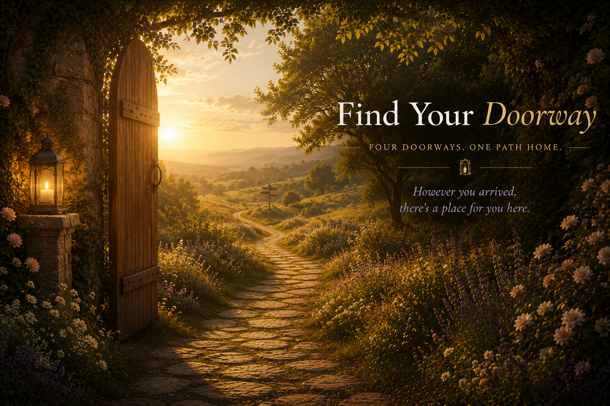

Find Your Doorway
The Journey Continues
The doorway helped you notice what you need today. Inside Soul Growth Circle, you'll learn how to meet difficult moments with more steadiness, understand what's happening within you, and return to yourself again and again.
This isn't about fixing yourself or getting every moment right. It's about building a relationship with yourself that you can rely on when life feels uncertain, heavy, or overwhelming.
Simple experiences that help you pause, listen, and return.
Begin with Find Your Footing, then explore the classroom at your own pace.
A quiet, supportive space filled with people practicing alongside you.
You've found the doorway. Now you can continue the journey inward.
Enter Soul Growth Circle →Doorway One
Recognition text loads here.
The Journey Continues
What you just noticed is a beginning. Inside Soul Growth Circle, you'll have guided practices, a path to follow, and a community where you can keep learning how to listen to what's happening within you and return to yourself.